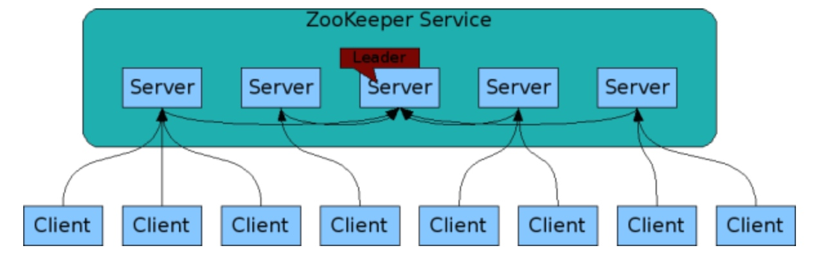
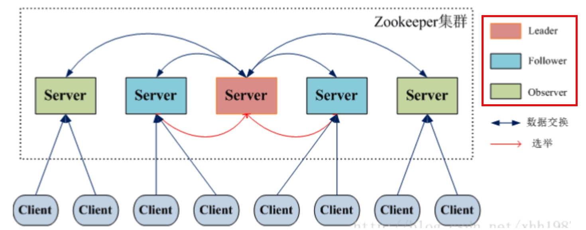
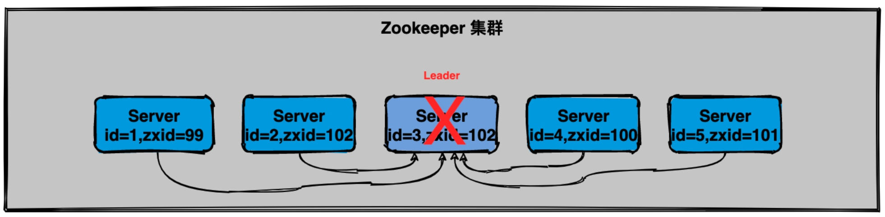
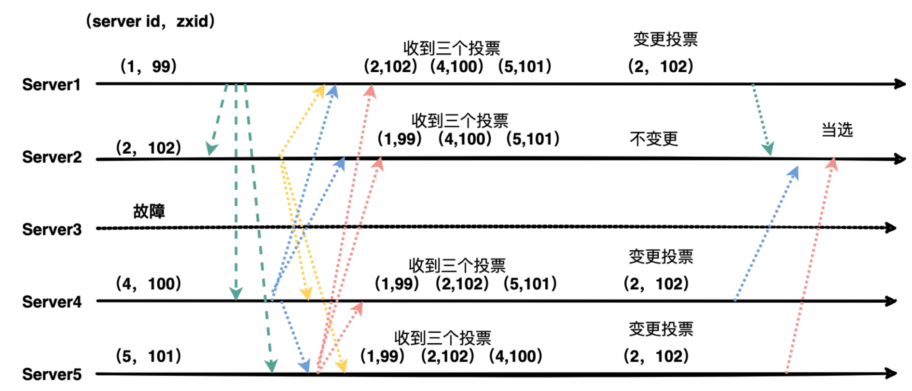
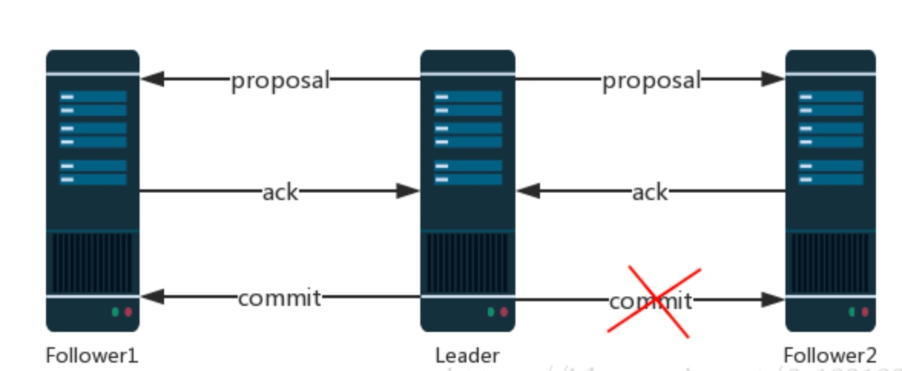

ZooKeeper
ZooKeeper集群
为了保证高可用性，最好以集群方式部署 ZooKeeper，官方架构图就是一个 ZooKeeper 集群整体对外提供服务。
每一个 Server 代表一个安装 ZooKeeper 服务的服务器，组成 ZooKeeper 服务的服务器会在内存中维护一个状态，并且每台 Server 之间都互相保持着通信。集群之间通过 ZAB 协议保持数据的「一致性」。

ZooKeeper集群角色
在 ZooKeeper 中没有选择传统的 Master/Slave 概念，而是通过 Leader、Follower、Observer 三种角色：

| 角色 | 说明 |
|---|---|
| Leader | 为客户端提供读、写服务，负责投票的发起和决议，更新状态 |
| Follower | 为客户端提供读服务，如果是写则转发给Leader；参与选举中的投票 |
| Observer | 为客户端提供读服务；不参与选举投票，不参与“过半写成功”策略 |
Observer 观察者在不影响写性能的情况下（不参与“过半写成功”策略）提升集群的读性能。
Leader选举
当 Leader 服务器出现网络中断、崩溃退出与重启等异常情况，就会进入 Leader 选举过程产生新的 Leader 服务器。
- 选举阶段：节点一开始都处于选举阶段，只要有一个节点超过「半数节点」票数，就可以选举成为新 Leader；
- 发现阶段：Follower 跟准 Leader 进行通信，同步 Follower 接收到的事务提议；
- 同步阶段：利用 Leader 的前一阶段获取最新提议历史，同步集群中所有副本，同步完成后准 Leader 才会成为真正的 Leader；
- 广播阶段：ZooKeeper 集群才能正式对外提供事务服务，并且 Leader 可以进行消息广播，同时如果有新节点加入还要对新节点进行同步。
运行时期的 Leader 选举，是由于 Leader 服务器挂掉了，整个 ZooKeeper 集群将暂停对外服务：

- Leader 故障后，其余的非 Observer 服务器都会将自己的状态改为
LOOKING，然后进入选举； - 第一次投票时，每台机器都会将票投给自己，接着每台机器都会将自己的投票发给集群中其他所有机器；
- 集群中服务器接受到投票后，先判断其有效性，比如是否是本轮 Epoch 投票、投票是否来自 LOOKING 状态的服务器；
- 针对每个投票，将别人的投票和自己的 PK，规则为：
- 优先检查 ZXID，ZXID 比较大的服务器优先作为 Leader；
- 如果 ZXID 相同，就比较 SID，SID 较大的作为 Leader。
- 每轮投票后，服务器统计投票判断是否有机器收到过半的投票数，之后再改变集群中服务器状态。
sid：服务器 ID，初始化启动时就是根据服务器 ID 进行比较；Zxid：服务器存放的数据的事务 ID，值越大说明数据越新，在选举中的权重就越大；Epoch：逻辑时钟，表示投票的次数，同一轮投票中的逻辑时钟值是相同的。
ZAB协议和Paxos算法
ZooKeeper 没有直接通过 Paxos 算法保证数据一致性，而是采用 ZAB 协议作为保证「数据一致性」的核心算法，是特别为 ZooKeeper 设计的「崩溃可恢复的原子消息广播算法」。
ZAB的两种基本模式
ZAB 协议中包含的两种基本模式，分别是：
崩溃恢复：当整个服务框架在启动过程中，或是当 Leader 服务器出现网络中断、崩溃退出与重启等异常情况时，ZAB 协议就会进入「恢复模式」并选举产生新 Leader。当选举产生新 Leader，同时集群中已经有过半的机器与该 Leader 服务器完成状态同步后，ZAB 协议就会退出恢复模式。
状态同步：数据同步，用来保证集群中存在过半的机器能够和 Leader 服务器的数据状态保持一致。
具体来说，ZAB 的崩溃恢复需要解决两类问题，①已经被处理的消息不能丢失；②被丢弃的消息不能再次出现。
- 对于第一点来说，当 Leader 收到合法数量的 ACK 后会向各个 Follower 广播 commit 命令，同时在本地 commit 并向客户端返回。但是在各个 Follower 收到 commit 之前 Leader 就挂掉导致 Follower 没有执行这条消息：

通过 ZAB 只要保证选举出来的新 Leader 服务器拥有集群中所有机器的最大
ZXID编号，就能保证新 Leader 一定含有这个 proposal 而不会丢失。- 对于第二点来说，当 Leader 收到消息请求生成 proposal 就挂了，其他 Follower 没有收到这个 proposal，重新选举出新 Leader 后，旧 Leader 重启并成为 Follower，但是他保留了这个被跳过的 proposal，和系统状态不一致。
zxid是 64 位的，高 32 位是 epoch 任期，每次经过一次选举新 Leader 就会将 epoch 号 +1；低 32 位是消息计数器，没收到一条消息这个值 +1，新 Leader 选举后这个值重置为 0。这样设计的好处是，当旧的 Leader 重启成为 Follower 后，新的 Leader 会让它将所有旧 epoch 中没有被 commit 的 proposal 清除。
- 对于第一点来说，当 Leader 收到合法数量的 ACK 后会向各个 Follower 广播 commit 命令，同时在本地 commit 并向客户端返回。但是在各个 Follower 收到 commit 之前 Leader 就挂掉导致 Follower 没有执行这条消息：
- 消息广播：当集群中已经有过半的 Follower 服务器完成了和 Leader 服务器的状态同步，那整个服务框架就可以进行消息广播模式。一个新节点加入集群中，如果此时集群中已经存在一个 Leader 在负责进行消息广播，那新加入的服务器就会自觉进入「数据恢复」模式——找到 Leader 并与其进行数据同步，然后一起参与到消息广播流程。
ZAB 的数据传递策略就是消息广播模式的工作内容，类似于二阶段提交，但是它们最大的区别是：Leader 只需要等到半数以上的 Follower 的 ACK 反馈之后就可以提交事务 Proposal。
消息广播的步骤：
- 客户端发起一个写请求；
- Leader 服务器将客户端的请求转化为事务 Proposal 提案，同时为每个 Proposal 分配一个全局 ID，即 zxid；
- Leader 服务器为每个 Follower 分配一个单独的队列，然后将需要广播的 Proposal 提案依次放入队列中，根据 FIFO 策略进行消息发送；
- Follower 收到 Proposal 后，会以事务日志的方式写入本地磁盘中，写入成功后向 Leader 反馈一个 ACK 响应消息；
- Leader 收到超过半数以上 Follower 的 ACK 后，即认为消息发送成功，就会发送 commit 提交消息；
- Leader 向所有 Follower 广播 commit 消息，同时自身也完成事务提交，Follower 接收到 commit 消息后会将上一条事务提交。